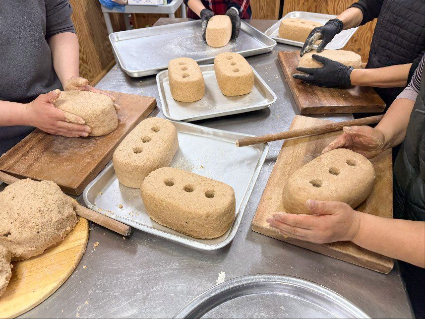
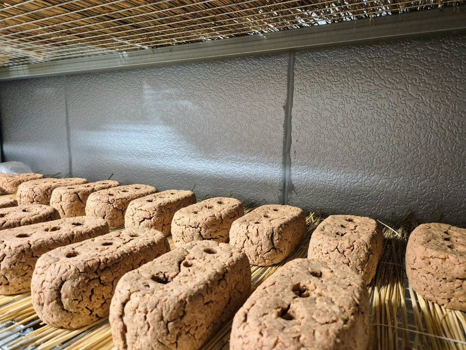
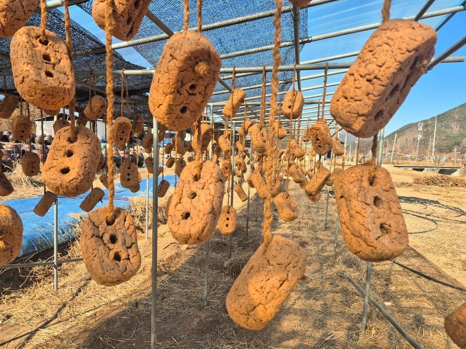
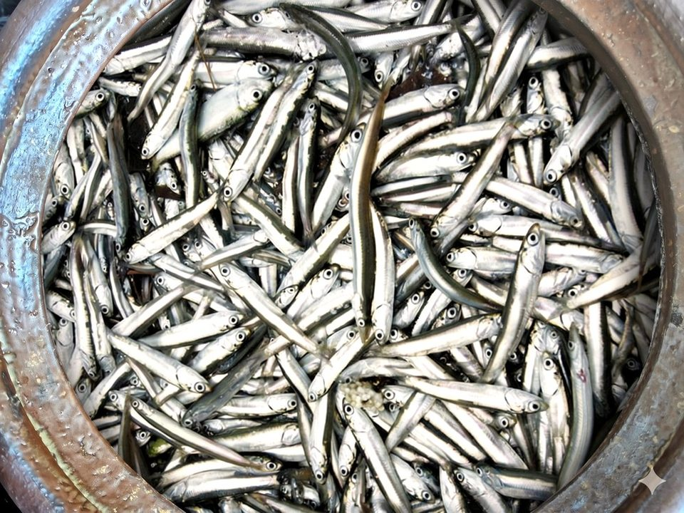
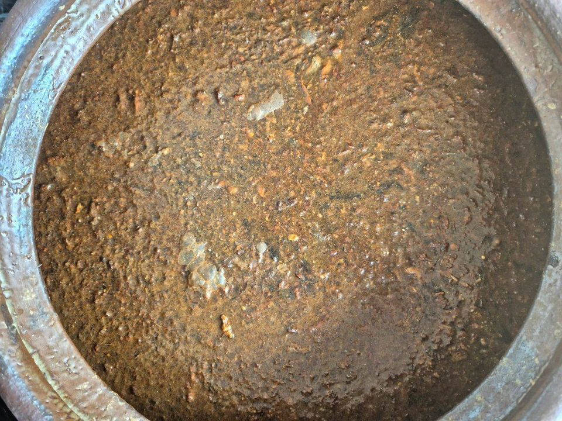
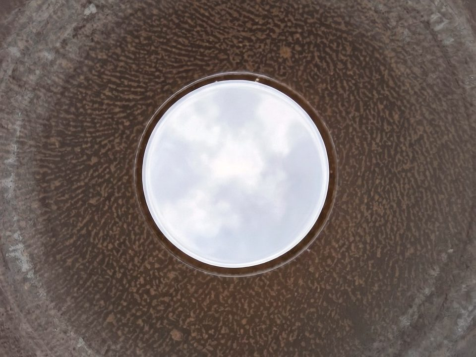
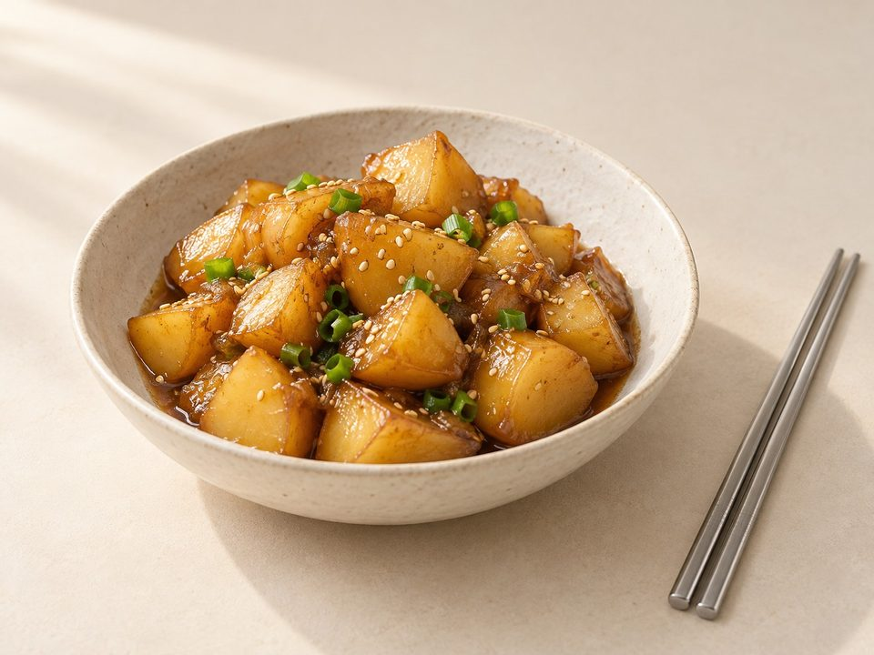
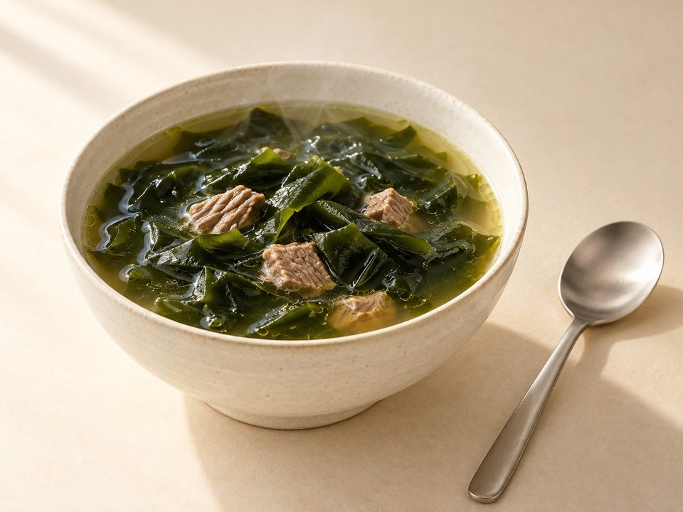
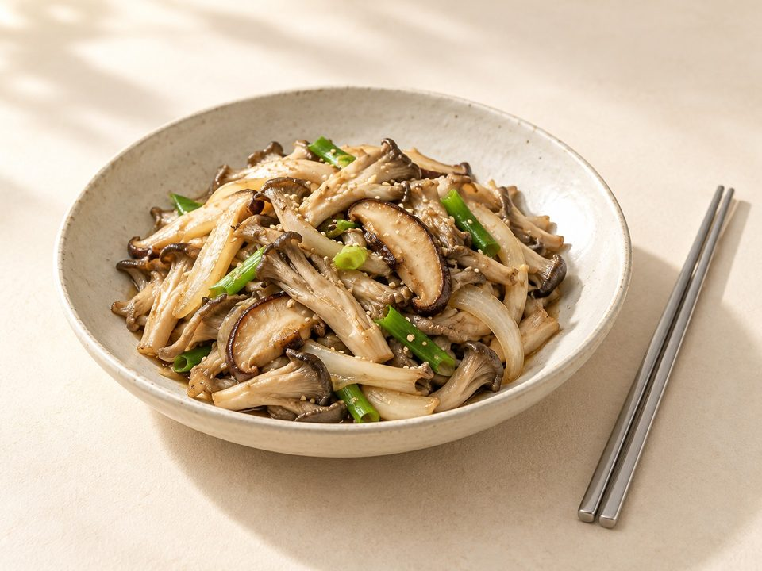

2년 이상 숙성
옹기숙성 된장
20,000원300g · 100g당 6,667원
자가 재배 콩 · 천일염


1 / 6
- 배송
- 택배 5,000원 · 100,000원 이상 무료
- 직접 수령
- 영동 농장 (충북 영동군 학산면)
- 주문 알림
- 주문 즉시 주문번호·결제 안내 문자
- 적립
- 회원 구매 시 2% 적립
총 상품 금액 (0개)0원
옹기숙성
발효의 진심
옹기숙성 어간장
3년 숙성한 대멸 액젓과 2년 숙성한 간장을 섞어
옹기에서 2년이상, 길게는 3년 이상 발효·숙성합니다.
한눈에 보기
- 주원료
- 대멸 액젓 · 간장
- 숙성
- 액젓 3년 · 간장 2년
- 다시 숙성
- 섞은 뒤 2년 이상
- 용량
- 300ml
- 보관
- 직사광선을 피하고 냉암소에 보관하고, 개봉후에는 뚜껑 닫아 반드시 냉장보관 하세요
- 소비기한
- 제조일로부터 2년
STORY
간장에 감칠맛을 더하다
3년 숙성 대멸 액젓과 2년 숙성 간장을 혼합합니다.
다시 2년 이상 재발효 및 숙성의 시간을 거쳐 대멸의 감칠맛을 품은 간장입니다.
PROCESS
만드는 과정

01 / 06
메주 빚기
간장의 바탕이 되는 메주를 손으로 빚습니다.

02 / 06
발효실에서 띄우기
빚은 메주를 발효실에서 띄웁니다.

03 / 06
볕과 바람
햇볕을 들이고 바람을 쳐, 백국균 등 미생물을 소독하면서 메주를 완전히 띄웁니다.

04 / 06
대멸 항아리 입항
대멸을 항아리에 담아 젓갈로 숙성합니다.

05 / 06
혼합 및 옹기 입항
3년 액젓과 2년 간장을 섞어 옹기에 담습니다.

06 / 06
또 한 번의 숙성
옹기에서 2년 이상 다시 발효·숙성합니다.
TASTE & USE
활용하는 방법
- 무침 · 조림감칠맛을 더할 때
- 국 · 찌개간을 맞출 때
- 나물 · 볶음소스의 바탕
이렇게 드세요

감자볶음

미역국

버섯볶음
주문 후기
후기는 주문 단위로 남깁니다. 함께 주문한 상품이 있으면 그 상품의 후기에도 함께 보입니다.
첫 후기를 남겨 주세요.
상품정보제공고시
- 제품명
- 옹기숙성 어간장
- 식품의 유형
- 한식간장
- 생산자 및 소재지 (수입품의 경우 생산자, 수입자 및 제조국)
- 농업회사법인 주식회사 에프엔엘바이오푸드 · 충청북도 영동군 학산면 모리2길 3-1
- 제조연월일, 소비기한 또는 품질유지기한
- 제조일로부터 2년
- 포장단위별 내용물의 용량(중량), 수량
- 300ml
- 원재료명 (「농수산물의 원산지 표시 등에 관한 법률」에 따른 원산지 표시 포함) 및 함량(원재료 함량 표시대상 식품에 한함)
- 염수[(정제수,천일염(국내산)11.6%)]45.1%,한식메주(국내산)24.9%, 멸치액젓[대멸(국내산)70%,천일염(국내산)30%]30%
- 소비자 안전을 위한 주의사항 (「식품 등의 표시ㆍ광고에 관한 법률 시행규칙」 제5조 및 [별표 2]에 따른 표시사항을 말함)
- 보관방법 : 직사광선을 피하고 냉암소에 보관하고, 개봉후에는 뚜껑 닫아 반드시 냉장보관 하세요
반품 및 교환방법 : 제품구입처 및 판매원
본 제품은 공정거래위원회 고시 소비자분쟁해결기준에 의거 교환 또는 보상받을 수 있습니다.
부정불량 식품신고 : 국번없이 1399
소비자 상담실 : 010-5126-7578 - 소비자 상담 관련 전화번호
- 010-5126-7578
배송·교환·환불
- 배송비
- 택배 5,000원 · 상품 합계 100,000원 이상 무료. 제주·도서산간은 배송비가 추가될 수 있습니다.
- 직접 수령
- 충청북도 영동군 학산면 모리2길 3-1 · 주중,주말 오전 9시~오후 6시, 방문 전 전화
- 교환·환불
- 교환·반품·환불 안내 보기
함께 담기 좋은 제품


활용하는 방법의 요리 사진 등 일부 사진은 AI로 만든 연출 이미지입니다.